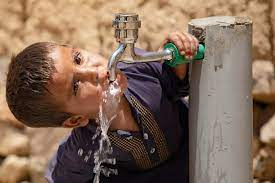
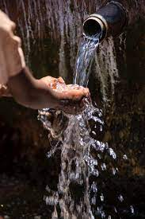

WELCOME TO CLEAN WATER FOR ALL PROJECT
The Clean Water for All Project is a life-changing initiative dedicated to ending the global water crisis by delivering safe, clean, and reliable drinking water to the world’s most vulnerable communities.
Our Programs
Water Source Development

We identify and develop reliable water sources, including protected springs, boreholes, rainwater harvesting, and more.
Infrastructure Installation

We build water systems like tap stands, gravity-fed pipelines, and household connections to ensure easy access.
Water Purification Solutions
We provide purification tools like solar disinfection, filters, and chlorine tablets to ensure safe drinking water.
Hygiene and Sanitation Education
Our education programs teach proper hygiene practices, handwashing, and sanitation to maintain community health.